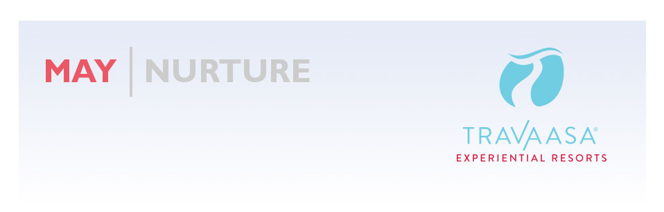
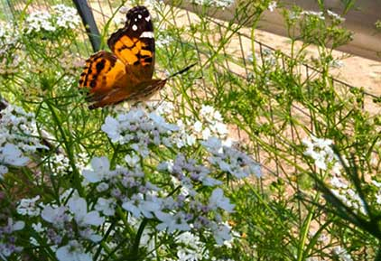
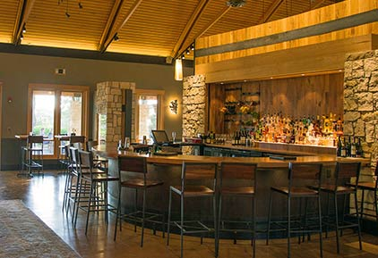
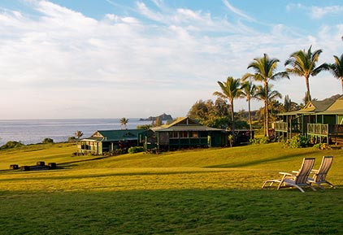
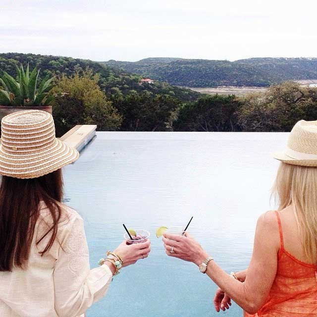

The Nature or Nurture question could be posed about our resorts: are they so great because of the beautiful properties, or because of the fantastic experience delivered by the team?
May is Nurture Month, so I'll say it's because of the team. Read our online reviews for confirmation—people are loving Travaasa so much it's almost embarrassing.
Hana has been known as a place for nurture and healing for ages, just being there puts your mind and body in a healthy place. In Austin, nurture yourself at our new bar with a Texas Heatt—our take on the margarita—and I'm sure you'll be smiling.
We hope to see you soon.
THIS MONTH |
|  |
Ever eaten a delicious watermelon or tomato and wondered if you could grow your own? Well, Travaasa’s very own Farm Manager Kim has you covered! Learn her secret for raising plants to help produce hundreds of seeds to use in the future.
MORE |
|  |
…and sits down next to you. That’s right. Travaasa Austin now has its very own watering hole, perfect to unwind at after a long day on the farm (or a long day of sitting by the infinity pool). Ready to wet your whistle? Here’s what is on the menu:
MORE |
 |
From sugar and salt scrubs in Hana to a delicious Cocomint body treatment and massage in Austin, it’s time to nurture that winter skin so it can say hello to summer!
MORE |
|  |
It's no surprise that Travaasa Hana has captured the hearts of HAWAII Magazine readers yet again this year. The property ranked #1 for "Best Boutique Hotel" and "Best Resort for a Romantic Getaway” in HAWAII Magazine's 2014 Readers' Choice Issue: Best of the Best. Thank you! We love you, too.
MORE |
“We stayed for 5 nights in an ocean front cottage with the Total Travaasa package. From our first contact exploring the possibilities all the way through checkout we were blown away with the Travaasa team. The cottage was "quaint" but extremely comfortable, the free and paid activities were great, the spa was awesome, and the restaurant and lounge unbelievable. The only thing that surpassed the facilities was the people. Everyone we dealt with had such positive and loving attitudes, we felt like we were visiting family, not a resort. A little costly, yes, but do yourself a favor and splurge, you won't be sorry you did! ” - “Heaven on Earth” – hallrejr |
Did you fall in love with us, too?
Share your photos or let us know about your stay in Austin or Hana. |
|  |
by @bishopandholland
Follow @Travaasa on Instagram |
ON THE HORIZON
June is Man Month
In honor of National Men’s Health Month, we’re dedicating JUNE to #ManSkills. Follow along as six vastly different guys experience the Ultimate Mancation in Austin. Who knows, you may get the chance to win something awesome… and extremely manly.
July is Independence Month
From celebrating Red, White and Blue to discovering new things about YOU, things are heating up at Travaasa in JULY! It’s the perfect time to cool off in the Austin Infinity pool or take a solo trip to Hana.
|
|